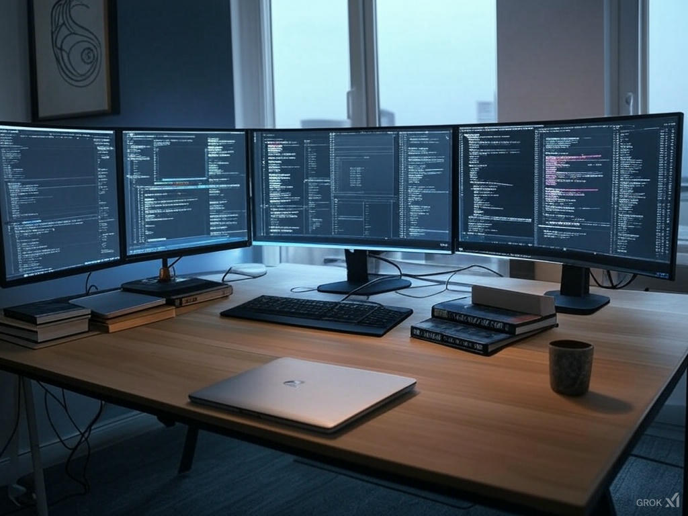

Hi, I'm Adam—Code Enthusiast & Problem Solver
Hey there! I’m Adam Rifai, a coder who’s been hooked on programming since I wrote my first line of code in middle school. This site is my digital workshop—where I tinker with code, share my projects, and nerd out about all things tech. Whether you’re here to see what I’ve built or chat about algorithms, I’m stoked you’re here!
My coding journey kicked off with HTML and CSS back in 2015, messing around with basic web pages in Notepad. Since then, I’ve dived into Python, JavaScript, and a bit of C++, building everything from a text-based adventure game to this very website. I love how coding lets me solve puzzles and create something out of nothing—check out my latest work on the Projects page!
# My first Python "Hello, World!" (circa 2017)
print("Hello, World!")The coding world’s full of awesome tools—here’s my take on a few big ones:
Right now, I’m deep into learning React to level up my web skills. My toolkit includes VS Code, GitHub, and a trusty Terminal—I’m always chasing the next bug to squash or feature to ship. Got a coding question? Hit me up on the Contact page!
I’m Adam, a Seattle-based developer who lives for the thrill of writing code that works. From debugging at 2 a.m. to seeing a project go live, it’s all about that rush. When I’m not glued to my screen, you’ll catch me brewing coffee or hiking the trails around Puget Sound. My coding adventures are over on the Projects page—take a peek!
Fun fact: My first program was a Python script that crashed my old laptop—it was a mess, but I was hooked. This site’s my playground, built from scratch to share my love for code.